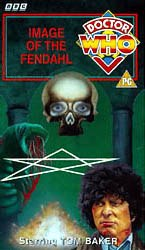
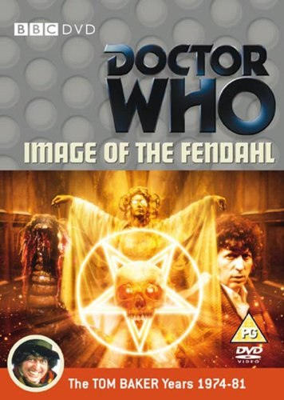
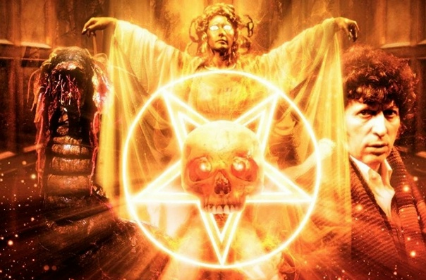
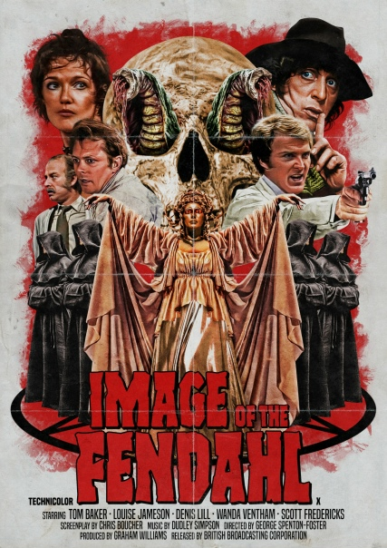
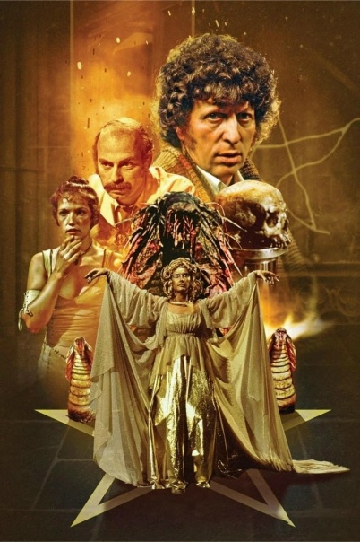

Эра Четвертого Доктора (15 сезон)
<<< НАЗАД ||| 3. Образ Фендала ||| ДАЛЬШЕ >>>
Субтитры: Русские и Английские |  |
|---|---|
с обновлением визуальных эффектов (cunningmunki) Субтитры: отсутствуют | |
Image of the Fendahl
Дата выхода: 29 октября - 19 ноября 1977
Формат: 4 эпизода по 25 мин.
 |  камео |
ТАРДИС прибывает в английскую деревушку Фетчборо, где археологи обнаружили череп, которому двенадцать миллионов лет. Профессор Фендельман с помощью временного сканера пытается получить образ его владельца — и находка оживает, убивая случайного путника и притягивая ТАРДИС к деревне. Доктор и Лила выясняют, что череп — остаток Фендала, древнего существа, питающегося жизненной энергией и уничтоженного вместе с Пятой планетой. Местная ведьма Марта Тайлер и её внук Джек оказываются втянуты в схватку, а Стаэл, глава культа чёрной магии, решает использовать Фендала для захвата власти. К-9 в этой серии лишь камео — он сломан и остаётся в ТАРДИС, а Доктор чинит его в финальной сцене и впервые называет «своей собакой».
 VHS - март 1993 |  DVD - 20 апреля 2009 |  Blu-ray - 18 марта 2024 * Версия в нашей группе |
|---|







Трейлер: